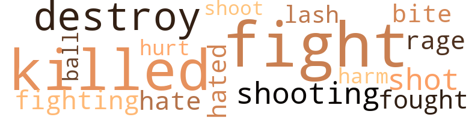
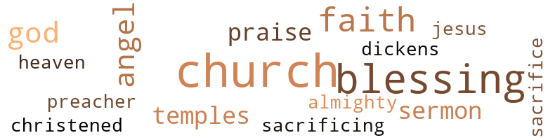

10 music-related terms matched in this text.
Most frequent terms in this topic: song (3); singing (2); tune (1); line (1); whistle (1)

sing.v.02
Definition: produce tones with the voice
| word |
sentence |
| singing |
It seemed that all of the cares of the world were forgotten , and everyone was singing praises to the Lord . |
| sang |
Beth was happy , and she sang as she worked . |
singing.n.01
Definition: the act of singing vocal music
| word |
sentence |
| singing |
Sunday morning , every citizen of Barton Woods was sitting in his regular pew in church singing loud and lusty . |
song.n.01
Definition: a short musical composition with words
| word |
sentence |
| song |
There was a song in her heart when she finished the portrait she 'd been working on that day . |
| song |
The song was still there when she returned to America that summer . |
| song |
The bird burst into song when he saw her looking at him . |
tune.n.01
Definition: a succession of notes forming a distinctive sequence
| word |
sentence |
| tune |
This time he whistled a little tune as he worked among the roses . |
| line |
She might have continued to follow this line of thought if something had not happened to change her mind . |
whistle.v.01
Definition: make whistling sounds
| word |
sentence |
| whistled |
This time he whistled a little tune as he worked among the roses . |
| whistle |
Jenny had compared him with Beth Holter , and that was something to whistle about . |
24 violence-related terms matched in this text.
Most frequent terms in this topic: killed (4); fight (3); destroy (2); Fight (2); lash (1)

destroy.v.04
Definition: put (an animal) to death
| word |
sentence |
| destroy |
Liars , cheaters and cold , calculating people who 'll do everything they can to destroy you . |
| destroy |
There was so much hope in them that he could n't destroy it . |
fight.n.05
Definition: a boxing or wrestling match
| word |
sentence |
| fight |
Now it was too late , and all she could do was fight dirty . |
| Fight |
" Fight to the bitter end , " roared Saul . |
| Fight |
" Fight to the bitter end , " roared Saul . |
fight.v.02
Definition: fight against or resist strongly
| word |
sentence |
| fight |
Therefore , she would fight anyone who seemed a threat to her . |
| fighting |
While Beth was getting set to enjoy the world of make-believe , Rupert Devance was fighting a desire to forget the world of reality . |
| fought |
Alf had fought every proposal that would improve the town . |
| fight |
Sometimes , when he appeared to be sympathetic , he was preparing to fight back with more force than ever . |
fury.n.01
Definition: a feeling of intense anger
| word |
sentence |
| rage |
But she flew into a wild rage such as Lannie had never seen before . |
hate.v.01
Definition: dislike intensely; feel antipathy or aversion towards
| word |
sentence |
| hate |
" I 'm doing this because I hate to see you cry . |
| hated |
Could that be the reason she hated Beth so much ? |
injury.n.01
Definition: any physical damage to the body caused by violence or accident or fracture etc.
| word |
sentence |
| harm |
" Jimmy did n't mean any harm , " said Mark . |
kill.v.10
Definition: cause the death of, without intention
| word |
sentence |
| killed |
" Yes , his wife was killed in an automobile wreck , just like your mother and father . |
| killed |
Only this time , the driver of the other car was killed , too . |
| killed |
I told the townfolks that my wife had been killed in an automobile wreck and I came here to forget the past . |
| killed |
John Holter and his wife had been killed instantly . |
musket_ball.n.01
Definition: a solid projectile that is shot by a musket
| word |
sentence |
| ball |
Her gray hair was drawn into a neat ball at the back of her neck , giving her a hawklike appearance . |
pain.v.02
Definition: cause emotional anguish or make miserable
| word |
sentence |
| hurt |
Maybe it was a present from someone whose feelings he did n't want to hurt . |
shoot.v.02
Definition: kill by firing a missile
| word |
sentence |
| shot |
The old Jimmy would have shot Joshua in the pants , but the new Jimmy was different . |
| shoot |
" No , but I did n't shoot him . |
shooting.n.02
Definition: killing someone by gunfire
| word |
sentence |
| Shooting |
Shooting children with the slingshot he always carried . |
sting.n.03
Definition: a painful wound caused by the thrust of an insect's stinger into skin
| word |
sentence |
| bite |
He picked up the ham sandwich and took a big bite . |
whip.v.04
Definition: strike as if by whipping
| word |
sentence |
| lash |
" I 'm sorry , dear , I did n't mean to lash out at you , but I could n't help it . |
38 religion-related terms matched in this text.
Most frequent terms in this topic: church (8); blessing (4); faith (4); God (3); sermon (2)

baptize.v.01
Definition: administer baptism to
| word |
sentence |
| christened |
Betty had been christened " Elizabeth Crail , " but she 'd always been called " Betty , " never Elizabeth , except when children teased her . |
blessing.n.05
Definition: the act of praying for divine protection
| word |
sentence |
| blessing |
" Take him with my blessing . " |
| blessing |
With her blessing ! |
| blessing |
How she 'd needed someone 's blessing during those first months . |
| Blessing |
John Holter called it ' The Patriarch 's Blessing . " |
| blessing |
The portrait was truly a blessing for John Holter . |
| Blessing |
After " The Patriarch 's Blessing , " there were many commissions for John Holter . |
church.n.02
Definition: a place for public (especially Christian) worship
| word |
sentence |
| church |
Then I joined the church , and Mr. Lawrence Lance became a local citizen . " |
| church |
Most of the people had stayed in church , content to shake hands and just talk . |
| church |
But she 'd gone outdoors to stand on the church steps in the warm sunshine . |
| church |
Saul might have commented further , but the ringing of a small bell let them know that it was time to go back into church . |
| church |
So they stopped talking and went into the church . |
| church |
Sunday morning , every citizen of Barton Woods was sitting in his regular pew in church singing loud and lusty . |
| church |
People would wonder why she came to church . |
church.n.04
Definition: the body of people who attend or belong to a particular local church
| word |
sentence |
| church |
From her window , she could see the church 's steeple and the school 's tin roof . |
devil.n.03
Definition: a word used in exclamations of confusion
| word |
sentence |
| dickens |
Maybe all of the talk about Eve Waters giving Beth " the dickens " was true . |
eden.n.01
Definition: any place of complete bliss and delight and peace
| word |
sentence |
| heaven |
But heaven knows what you can do . |
god.n.03
Definition: a man of such superior qualities that he seems like a deity to other people
| word |
sentence |
| God |
" Thank God for friends like you , " she said . |
| God |
" Well , good luck , and God bless you , child . " |
| God |
" Aunt Sue , " she said , " I think , when a child is born , the Almighty God touches him and gives him a talent . " |
godhead.n.01
Definition: terms referring to the Judeo-Christian God
| word |
sentence |
| Almighty |
" Aunt Sue , " she said , " I think , when a child is born , the Almighty God touches him and gives him a talent . " |
jesus.n.01
Definition: a teacher and prophet born in Bethlehem and active in Nazareth; his life and sermons form the basis for Christianity (circa 4 BC - AD 29)
| word |
sentence |
| Jesus |
Reverend Beldon preached about Jesus preparing his disciples for his departure . |
praise.n.02
Definition: offering words of homage as an act of worship
| word |
sentence |
| praise |
But , when the praise continued , she knew she had to do something . |
| praise |
The painting won much praise for Beth . |
preacher.n.01
Definition: someone whose occupation is preaching the gospel
| word |
sentence |
| preacher |
Doctor , lawyer , teacher , preacher or even Indian chief . |
religion.n.01
Definition: a strong belief in a supernatural power or powers that control human destiny
| word |
sentence |
| faith |
She gave him the faith and hope that he needed . |
| faith |
Yet , as he looked at Beth , he saw a young woman filled with hope and faith in the future . |
| faith |
Hope and faith that an old man must not destroy . |
| faith |
So Carol 's faith in her husband had been rewarded . |
sacrifice.v.04
Definition: make a sacrifice of; in religious rituals
| word |
sentence |
| sacrifice |
We must not sacrifice our children 's happiness . . . " " We are n't sacrificing anything ! " interrupted Jeff angrily . |
| sacrificing |
We must not sacrifice our children 's happiness . . . " " We are n't sacrificing anything ! " interrupted Jeff angrily . |
saint.n.02
Definition: person of exceptional holiness
| word |
sentence |
| angel |
Maybe Jimmy had a guardian angel somewhere . |
| angels |
Then he 'd gaze fondly at the sky and say , " Paint them tall so that angels can sit on them and watch the world below . " |
| angel |
There was a look of rapture on her face that reminded her of an angel . |
sermon.n.02
Definition: a moralistic rebuke
| word |
sentence |
| sermon |
And when service was over , everybody , including Abigail , shook hands with him and told him how much they 'd enjoyed his sermon . |
| sermon |
Some of them would talk about the minister 's sermon . |
temple.n.03
Definition: an edifice devoted to special or exalted purposes
| word |
sentence |
| temples |
His hair was beginning to gray a little at the temples . |
| temples |
Both were tall with brown eyes and dark hair that was beginning to gray at the temples . |